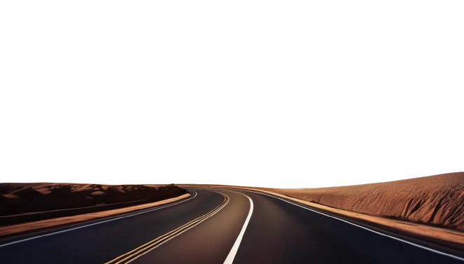
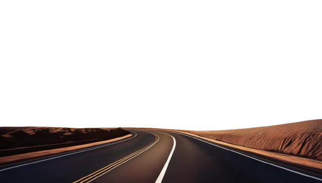

KHÁM PHÁ
Hành Trình Vào Những Bí Mật Bên Trong
Các Kim Tự Tháp không chỉ là biểu tượng của quyền lực và tôn giáo mà còn là cánh cửa dẫn đến những bí mật chưa được giải mã. Đằng sau những khối đá khổng lồ ấy là những câu chuyện chưa từng được kể về sự sống, cái chết và niềm tin của người Ai Cập cổ đại. Những phát hiện gần đây đã hé lộ các căn phòng ẩn giấu, các lối đi chưa từng được biết đến và những dấu vết cổ xưa khiến các nhà khoa học kinh ngạc. Mỗi lần khai quật, mỗi góc tối được chiếu sáng lại mang đến những câu hỏi lớn hơn: Ai là người thiết kế các hành lang bí mật? Những căn phòng chưa được mở chứa đựng điều gì? Và liệu rằng Kim Tự Tháp chỉ đơn thuần là nơi an nghỉ hay còn mang mục đích nào khác, như một trung tâm tôn giáo, khoa học hay thậm chí là nguồn năng lượng chưa được lý giải?